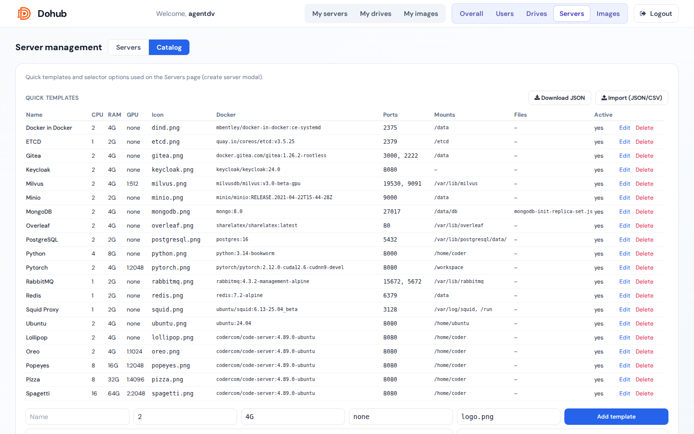

Admin → Servers → Catalog
Quick templates
Mỗi template gồm: Name, CPU, RAM, GPU, icon, Docker image/tag, ports, mount paths, file mounts, env defaults, active.
Thêm template
- Điền hàng inline hoặc Add template.
- Mount paths — ví dụ
/home/coder, /app/data.
- Default file mounts — upload file nhỏ + mount path.
- Environment defaults — JSON; hỗ trợ token
{{username}}.
Sửa / xóa
- Edit — modal đầy đủ trường + Sort order, Active.
- Delete — gỡ template.
- Download JSON / Import (JSON/CSV) — bulk.
Equipment catalogs
CPU, RAM, GPU options dùng trong dropdown form user:
- CPU:
0.5, 2, … → Add.
- RAM:
4G, 8G, …
- GPU:
1:1024 (count:MiB VRAM).